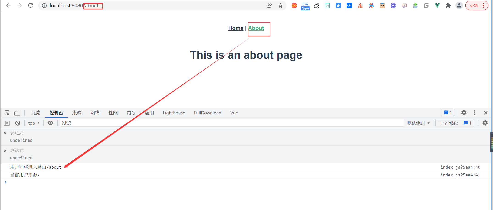

Contents
9. Vue.js的vue-router库¶
9.1. 1.Vue.js的页面路由实现¶
Vue.js是对前端技术的革新，是为了提升传统HTML中DOM节点的性能而出现的技术，它和React.js框架一样，都是为了让单页面应用能够极速地载入和响应。
现代的浏览器为开发者提供了一个可以使用的“操作系统”，各类网页本身就是浏览器中的应用。这类应用实现了打开即用，能达到和本地应用一样的性能和用户体验。
这种体验归功于前端技术的不断改进。也就是说，Vue.js和React.js等框架打造了新时代的网页“应用（App）”。
Vue.js使用虚拟DOM处理单页面，然后使用Webpack打包。
通过之前的示例，读者也许已经发现，无论语法和写法如何不同，Vue.js程序打包后都是一个单一的HTML文件，同时会引入一个标准的JavaScript文件。
也就是说，Vue.js中编写的所有代码都被Webpack自动打包成可以被浏览器解析的HTML和JavaScript代码，并且项目本身就只有一个页面。
这意味着所有的用户对服务器发出进入页面的请求时，只会对服务器发出一次请求。
注意：一个应用只有一个页面是不切实际的，将所有功能堆积在一个页面中，不仅影响用户体验，还影响开发的效率（大量代码叠加在一起）。
传统的HTML网页应用如果进行页面跳转，会根据网页地址（URL）来刷新页面，在网速极大提高的今天，这类跳转仍会不可避免地出现“白屏”现象，
这显然不是Vue.js单页面应用想要的效果。而应用本身又需要URL来控制页面，在这种情况下，Vue.js提供了vue-router来实现页面跳转。
vue-router提供了两种模式模拟URL：hash模式和history模式。
（1）hash模式是默认模式，使用网页的URL模拟一个完整的URL，当URL改变时，重新获取hash对应的页面（在Vue.js中是需要显示的组件），并将这些内容显示在页面中，这样模拟的URL不会让整个页面重新加载。也就是说，页面只在首次加载时刷新。这样就在无刷新的情况下，通过控制组件的显示，完成页面的切换。
vue-router如果采用默认的hash模式，会自动产生“#”。
（2）history模式针对的是支持HTML 5新特性history的浏览器，其本身就是用户访问页面时浏览记录的堆栈，HTML 5允许操作history栈中的内容。
注意：无论采用何种方式配置vue-router，Vue.js单页面应用都不会刷新页面。
9.2. 2. 使用vue-cli初始化Vue.js项目¶
所有的Vue.js项目都采用vue-cli（官方提供的命令行管理工具）构建，这比前面介绍的手动配置Webpack等方式要简单得多。
【示例】使用vue-cli配置Vue.js项目。
# 安装淘宝npm
npm install -g cnpm --registry=https://registry.npm.taobao.org
# vue-cli 安装依赖包
cnpm install -g @vue/cli
注意：之前没有选择vue-cli构建项目的一个原因是，Webpack是大多数框架构建的通用工具，了解Webpack的配置非常重要。
（2）在命令行工具中使用vue相关命令。首先使用如下命令新建一个项目，名称为router-test。
可参考文献：
http://vue.ezops.cn/#/src/01/%E8%84%9A%E6%89%8B%E6%9E%B6
vue create router-test
Vue CLI v5.0.1
? Please pick a preset:
Default ([Vue 3] babel, eslint)
Default ([Vue 2] babel, eslint)
> Manually select features # 选择手动
要用到vue-router库，但项目并没有默认安装，所以应当选择配置Manually select features，勾选该模块（通过空格键勾选）并且按Enter键确认
<enter> to proceed)
(*) Babel
( ) TypeScript
( ) Progressive Web App (PWA) Support
>(*) Router # 勾选
( ) Vuex
( ) CSS Pre-processors
(*) Linter / Formatter # 勾选
( ) Unit Testing
( ) E2E Testing
（4）确认之后，会询问是否使用history模式，这里选择是（Y）。接下来配置EsLint等选项，可以选择默认选项。
? Choose a version of Vue.js that you want to start the project with
3.x
> 2.x
? Use history mode for router? (Requires proper server setup for index fallback in production) Yes # Y
? Pick a linter / formatter config: Standard
? Pick additional lint features: Lint on save
? Where do you prefer placing config for Babel, ESLint, etc.? In dedicated config files
? Save this as a preset for future projects? No
（5）安装完成后，可以看到，成功创建了项目。
success Saved lockfile.
Done in 27.95s.
⚓ Running completion hooks...
📄 Generating README.md...
🎉 Successfully created project router-test.
👉 Get started with the following commands:
$ cd router-test
$ yarn serve
使用vue-cli创建了一个包含vue-router的项目，其中配置了相应的启动和构建打包指令。项目的package.json代码如下：
{
"name": "router-test",
"version": "0.1.0",
"private": true,
"scripts": {
"serve": "vue-cli-service serve",
"build": "vue-cli-service build",
"lint": "vue-cli-service lint"
},
"dependencies": {
"core-js": "^3.8.3",
"vue": "^2.6.14",
"vue-router": "^3.5.1"
},
"devDependencies": {
"@babel/core": "^7.12.16",
"@babel/eslint-parser": "^7.12.16",
"@vue/cli-plugin-babel": "~5.0.0",
"@vue/cli-plugin-eslint": "~5.0.0",
"@vue/cli-plugin-router": "~5.0.0",
"@vue/cli-service": "~5.0.0",
"@vue/eslint-config-standard": "^6.1.0",
"eslint": "^7.32.0",
"eslint-plugin-import": "^2.25.3",
"eslint-plugin-node": "^11.1.0",
"eslint-plugin-promise": "^5.1.0",
"eslint-plugin-vue": "^8.0.3",
"vue-template-compiler": "^2.6.14"
}
}
最新版本的vue-cli提供了图形化的项目创建页面，需要通过浏览器配置项目。在命令行工具中使用如下命令启动vue-cli：
vue ui
上面的命令会启动一个小服务器，同时打开一个项目配置页面，如图所示，可以在其中更改已创建的项目或创建新的项目。
注意：使用vue-cli构建的项目没有Webpack的相关配置，这并不意味着项目没有使用Webpack，因为vue-cli本身就是一个基于Webpack构建的Vue.js专属构建工具。
9.3. 3. 安装和配置vue-router¶
如果需要在现有的Vue.js项目中使用vue-router，或者在构建项目时没有添加vue-router，则需要像在Express框架中使用其他模块一样，通过npm命令安装vue-router。
（1）安装命令如下：
npm install vue-router
（2）安装完成后，可以直接在main.js中定义路由并引用，或编写一个单独的文件用来定义路由。笔者采用单独文件的方式，在src文件夹中新建一个文件夹并命名为router，然后定义一个JavaScript文件，命名为index.js（名称自定义即可）。代码如下：
import Vue from 'vue'
import VueRouter from 'vue-router'
import HomeView from '../views/HomeView.vue'
Vue.use(VueRouter)
const routes = [
{
path: '/',
name: 'home',
component: HomeView
},
{
path: '/about',
name: 'about',
// route level code-splitting
// this generates a separate chunk (about.[hash].js) for this route
// which is lazy-loaded when the route is visited.
component: () => import(/* webpackChunkName: "about" */ '../views/AboutView.vue')
}
]
const router = new VueRouter({
mode: 'history',
base: process.env.BASE_URL,
routes
})
export default router
该文件不仅实例化了一个VueRouter，还定义了一个名为/和/about的路由，访问该路由时会调用组件HomeView和AboutView。
（3）编写完router文件后再编写main.js，其中要引入router文件，然后在实例化Vue.js对象时传入。代码如下：
import Vue from 'vue'
import App from './App.vue'
import router from './router'
Vue.config.productionTip = false
new Vue({
router,
render: h => h(App)
}).$mount('#app')
（4）接着在App.vue中引入路由组件。本章前面介绍过Vue.js的路由并不是真实的页面刷新，而是对组件显示内容的切换，因此将组件添加在App.vue的统一Vue文件入口中。代码如下：
<template>
<div id="app">
<nav>
<router-link to="/">Home</router-link> |
<router-link to="/about">About</router-link>
</nav>
<!-- 引入路由显示组件-->
<router-view/>
</div>
</template>
因为vue-router库是全局注册，在vue-router库注册的同时其自带的组件也都是全局注册，所以不需要在页面的components中注册就可以直接使用。
注意：如果在构建Vue.js项目时已经添加了vue-router库，则不需要任何配置便可以直接使用它。
9.4. 4. 动态路由匹配¶
无论是自行安装vue-router，还是通过vue-cli命令直接构建工程，都需要保证工程能够支持路由。URL的作用除了指定页面的访问地址外，还包括路由参数的传递。在Vue.js中通过参数也能实现路由的动态匹配。例如，CMS系统（内容管理系统）中某一篇文章的路由访问路径形式如下：
http://localhost/article?id=xxx
http://localhost/article/xxx
第一行表示以传统的参数形式进行访问，通过GET方式发送请求，并在URL之后跟随一个“?”和id参数，其中xxx为该文章的唯一ID，通过它可以查询文章本身，并且不存在二义性。
第二行显示的其实就是动态路由规划实现的功能，对所有以“基础网址+‘/article/’+参数”形式的路由路径统一解析在某一个处理逻辑中，路径最后跟随的信息被认为是参数而不是路径本身。
【示例】通过用户ID访问用户的主页。
首先定义路由，修改router文件夹中的index.js文件，增加相应的用户信息路由。以下是HomeIndex部分路径定义的代码：
import HomeIndex from '@/views/HomeIndex'
Vue.use(VueRouter)
const routes = [
{
path: '/',
name: 'home',
component: HomeView
},
{
.....
},
{
path: '/user/:id',
name: 'HomeIndex',
component: HomeIndex
}
]
const router = new VueRouter({
mode: 'history',
base: process.env.BASE_URL,
routes
})
export default router
编写用于显示该功能的用户界面，在view文件夹中新建HomeIndex.vue文件，该文件就是上述代码引入的组件。
本例定义一个用户信息数组，如果用户传递的ID参数范围是1～4，则显示相应用户的信息，如果超过这个范围，则显示不存在该用户。模板代码中显示基本的用户信息。
完整代码如下：
<template>
<div>
<div>用户信息：</div>
<div>用户id：{{ this.user.id }}</div>
<div>用户名称：{{ this.user.name }}</div>
<div>用户性别：{{ this.user.sex }}</div>
<div>用户邮箱：{{ this.user.email }}</div>
</div>
</template>
<script>
export default {
name: 'HomeIndex',
data () {
return {
users: [
{ id: 1, name: '用户1', sex: '男', email: '1@qq.com' },
{ id: 2, name: '用户2', sex: '女', email: '1@qq.com' },
{ id: 3, name: '用户3', sex: '女', email: '1@qq.com' },
{ id: 4, name: '用户4', sex: '男', email: '1@qq.com' }
],
user: {}
}
},
// 在创建时获取参数
created () {
console.log(this.$route.params.id)
const id = this.$route.params.id
if (id > 4) {
this.user = { id: 0, name: '无此用户', sex: '', email: '' }
} else {
this.user = this.users[parseInt(id) - 1]
}
}
}
</script>
<style scoped>
</style>
可以看到，传递的参数（id）可以使用this.\(route.params.id来获取。也就是说，如果只是为了在页面中显示该参数，使用{{\)route.params.id }}就可以完成，
当访问http://localhost: 8081/user/4时，自动进入该路由
对于路由的匹配来说，参数的匹配只是其中很小的一部分。vue-router使用path-to-regexp作为路径匹配引擎，可以支持更多的匹配格式，例如正则表达式和多个动态路径参数等。
9.5. 5. 路由嵌套¶
Vue.js的基础就是组件，既然基础路由可以存在于App组件中，自然也可以嵌套在任何子组件中。每一个组件都可以拥有自身的路由配置。
也就是说，这样的设计思路可以为拥有同一个路由前缀的组件设计通用模板，以减轻页面组合的工作量，从而更好地实现组件的复用，尤其是可以实现小范围的页面刷新。
【示例】在示例的基础上为路由增加两个子路由。
<template>
<div>
<div>用户信息：</div>
<div>用户id：{{ this.user.id }}</div>
<div>用户名称：{{ this.user.name }}</div>
<div>用户性别：{{ this.user.sex }}</div>
<div>用户邮箱：{{ this.user.email }}</div>
<router-view></router-view>
</div>
</template>
因为<router-view></router-view>已经是全局注册，所以可以在任何组件中使用，这并不影响正常的页面访问。
（2）修改路由文件。修改router文件夹下的index.js文件，在User路由中添加两条子路由，编写在children参数中，同时引入需要的组件，具体代码如下：
import HomeIndex from '@/views/HomeIndex'
import UM from '@/views/UserMessage'
import UD from '@/views/UserDetail'
Vue.use(VueRouter)
const routes = [
{
path: '/',
name: 'home',
component: HomeView
},
{
path: '/user/:id',
name: 'HomeIndex',
component: HomeIndex,
children: [
{ path: 'um', component: UM },
{ path: 'ud', component: UD }
]
}
]
（3）在views文件夹中定义两个子路由的组件，分别命名为UserDetail.vue和UserMessage.vue，在其中显示一些内容。
UserDetail.vue
<template>
<div>
<div id="detail">{{ detail }}</div>
</div>
</template>
<script>
export default {
name: 'UserDetail',
data () {
return {
// 设定用户消息
detail: '用户的详细信息'
}
},
// 在创建时进行参数获取
created () {
// 打印访问参数
console.log('detail组件创建')
}
}
</script>
<style>
#detail {
color: red;
}
</style>
UserMessage.vue
<template>
<div>
<div id="message">用户消息：{{ message }}</div>
</div>
</template>
<script>
export default {
name: 'UserMessage',
data () {
return {
// 设定用户消息
message: '暂时没有消息'
}
},
// 在创建时进行参数获取
created () {
// 打印访问参数
console.log('message组件创建')
}
}
</script>
<style>
#message {
color: red;
}
</style>
访问http://localhost:8081/user/3/ud，在User信息的下方出现“用户的详细信息”
访问http://localhost:8081/user/3/um，在User信息的下方出现“用户消息：暂时没有消息”
9.6. 6. 路由跳转¶
对于模板页面，vue-router提供了<router-link to=""> </router-link>组件，该组件可以在任何组件中使用，类似于HTML中的<a>标签实现对导航页面的定义。
该组件通过to参数指定跳转页面。如果在新建实例时选择自动引入vue-router，则生成的页面中包含该组件的实例，位于App.vue中，用于主页和About页面的跳转，其代码如下：
<template>
<div id="app">
<nav>
<router-link to="/">Home</router-link> |
<router-link to="/about">About</router-link>
</nav>
<!-- 引入路由显示组件-->
<router-view></router-view>
</div>
</template>
单击链接可以跳转页面。查看源代码可以发现，页面本身被解析成了一个标准的<a>标签。
通过代码也可以实现路由路径的指定和跳转，这就不得不提router实例了，也就是组件中的this.$router。
在Vue.js中以下两类代码是等同的。
在模板中使用：
<router-link to="/">
在代码中使用：
this.$router.push('/')
push()方法的参数可以是字符串路径或描述地址的对象。一般的字符串路径如下：
{ name: 'user',params: {userId: '123'} }
根据用户输入的id参数进行跳转。更改后的HomeIndex代码如下：
<template>
<div>
<div>用户信息：</div>
<div>用户id：{{ this.user.id }}</div>
<div>用户名称：{{ this.user.name }}</div>
<div>用户性别：{{ this.user.sex }}</div>
<div>用户邮箱：{{ this.user.email }}</div>
<router-view></router-view>
</div>
</template>
<script>
export default {
name: 'HomeIndex',
data () {
return {
users: [
{ id: 1, name: '用户1', sex: '男', email: '1@qq.com' },
{ id: 2, name: '用户2', sex: '女', email: '1@qq.com' },
{ id: 3, name: '用户3', sex: '女', email: '1@qq.com' },
{ id: 4, name: '用户4', sex: '男', email: '1@qq.com' }
],
user: {}
}
},
// 在创建时获取参数
created () {
// 打印访问参数
console.log(this.$route.params.id)
const id = this.$route.params.id
if (id > 4) {
this.user = { id: 0, name: '无此用户', sex: '', email: '' }
} else {
// eslint-disable-next-line eqeqeq
if (id == 1) {
this.$router.push('/user/1/um')
// eslint-disable-next-line eqeqeq
} else if (id == 2) {
this.$router.replace('/user/2/ud')
}
// 确定用户
this.user = this.users[parseInt(id) - 1]
}
},
updated () {
console.log('该页面update')
}
}
</script>
<style scoped>
</style>
在浏览器中打开一个新的页面进行测试，输入地址http://localhost:8081/user/1，该页面会自动跳转至http://localhost:8081/user/1/um，并且可以执行回退操作。
单击“回退”按钮，该路径可以回退至http://localhost:8081/user/1，并且在User.vue页面出现update提示。
如果输入地址http://localhost:8081/user/2，则会调用replace直接替换页面，当前页面自动关闭，不能回退。
除了这两个方法以外，router还提供了go(n)方法来操作history栈，表示在历史中前进或后退多少步，类似于window.history.go(n)。如果参数为负整数，则代表历史记录的后退；
如果为正整数，则表示历史记录的前进；如果数字超过了页面堆，则失败。
9.7. 7. 导航守卫¶
vue-router提供了针对路由的导航守卫，可以在路由变化时执行一些代码，类似于某些开发框架中的中间件概念，可以针对全局路由或某一个特定路由。
【示例】
本例增加的日志打印导航守卫是一个全局前置导航守卫，它会在用户访问任何一个路径时打印用户访问路径的日志，这类数据可以通过后端接口记录在服务器中，用于用户的行为分析。
代码编写在router:raw-latex:index.js文件中，在原来的路由代码下增加如下代码：
import { createRouter, createWebHistory } from 'vue-router'
import HomeView from '../views/HomeView.vue'
import HomeIndex from '@/views/HomeIndex'
import UM from '@/views/UserMessage'
import UD from '@/views/UserDetail'
const routes = [
{
path: '/',
name: 'home',
component: HomeView
},
{
path: '/about',
name: 'about',
// route level code-splitting
// this generates a separate chunk (about.[hash].js) for this route
// which is lazy-loaded when the route is visited.
component: () => import(/* webpackChunkName: "about" */ '../views/AboutView.vue')
},
{
path: '/user/:id',
name: 'HomeIndex',
component: HomeIndex,
children: [
{ path: 'um', component: UM },
{ path: 'ud', component: UD }
]
}
]
const router = createRouter({
history: createWebHistory(process.env.BASE_URL),
routes
})
// 前置导航守卫
router.beforeEach((to, from, next) => {
// 打印用户的相关资料
console.log('用户即将进入路由' + to.path)
console.log('当前用户来源' + from.path)
next()
})
export default router
以上代码通过router.beforeEach()创建一个全局导航守卫，并在所有的路由被访问时调用该守卫。
